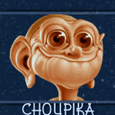

Forums galactiques > Taverne galactique : lieu de discussion informel > Machine a café [Rp!]
Pages : 1 2 ... 290 291 292 ... 443 444
| Hecate de Lunargent Réputation à la taverne : 293  19/08 ETU 10:35 | Score : 0 Détails "Oh, je vais bien. Nous avons enfin découvert ce que la fusion entre Khalim et son pendentif/artefact donne. Il restera donc bien lui même en toute occasion, j'en suis donc très heureuse."
"Oh, bonjour Aerynn, comment allez vous ? On ne vous avait plus revu depuis longtemps..." | ||
| Atheos Réputation à la taverne : 133  19/08 ETU 10:37 | Score : 0 Détails Surpris par le rire derrière lui, il se retourna et sourit en voyant Aerynn.
" Oh bonjour, ça faisait un moment que l'on ne vous avait pas vu, comment allez vous ? Hecate, quel est l'effet de cette fusion ?" | ||
| Hecate de Lunargent Réputation à la taverne : 293 19/08 ETU 10:41 | Score : 0 Détails "Et bien, il est devenu ce qu'on pourrait appeler un dragon-garou, j'imagine. Mais il garde ses esprits, c'est déjà ça."
| ||
| -[Aerÿnn]- Réputation à la taverne : 2661  19/08 ETU 10:47  | Score : 0 Détails Comme prévu et voyant Hécate, la jeune femme lui fît un baiser sur la joue et l'enlaça,
elle fît de même à Atheos puis se retirant, gênée, elle leur sourit. "Je vais bien merci... Et vous deux ?! Quelles nouvelles que j'ai râtées...?" | ||
| Hecate de Lunargent Réputation à la taverne : 293 19/08 ETU 10:50 | Score : 0 Détails Hecate eut l'air un peu surprise par l'embrassade, mais ça ne la dérangeait pas.
"Et bien, vous... Tu as l'air bien en forme. Que nous vaut cet honneur ?" | ||
| Atheos Réputation à la taverne : 133 19/08 ETU 10:51 | Score : 0 Détails Il fit une petite moue à Hecate en signe d'inquiétude pour le futur témoin. Puis beaucoup plus gaiement il tourna la tête vers Aerynn:
" Oh rien de spécial. Je vais me marieravec Kryllenne...." | ||
| -[Aerÿnn]- Réputation à la taverne : 2661 19/08 ETU 10:55 | Score : 0 Détails Regardant Hécate :
"Oh hé bien disons que le temps me fais sourire... Comment vont Leorique et Khalim ?" Se tournant vers Atheos : "Oh c'est vrai ?! Félicitations sincères Atheos ! J'aimerais revoir la petite Kryllenne qui doit avoir bien grandi..." | ||
| Atheos Réputation à la taverne : 133 19/08 ETU 10:56 | Score : 0 Détails Il prit un air rêveur:
" Oh oui, elle a bien grandi...." | ||
| Hecate de Lunargent Réputation à la taverne : 293 19/08 ETU 11:01 | Score : 0 Détails "Non, ne vous inquiétez pas... Pour le moment il n'a pas l'air de bien controler la transformation en elle même, mais ça n'a l'air de se déclencher que lorsqu'il est sujet à une grande colère. Je ne pense pas qu'il se passera quoi que ce soit pendant votre mariage. De toute façon, je serai là, au moindre problème, j'agirai."
Se tournant vers Aerynn "Oh, Leo vat bien, il est toujour le nez plongé dans ses dossiers. Quand à Khalim il devenu un dragon garou, mais il a l'air de controler la situation." | ||
| -[Aerÿnn]- Réputation à la taverne : 2661 19/08 ETU 11:05 | Score : 0 Détails "J'éspère la revoir... et je suis bien heureuse pour vous deux."
Serre une nouvelle fois Atheos dans ses bras. Ainsi donc les amoureux célébreront officiellement leur amour. De nouveau vers Hecate : "Ok, si tu vois Leorique, fais-lui un baiser de ma part... Puis l'air inquiet : "Mais pour Khalim, Hecate... Comment ça ? Enfin, tu n'es pas obligée de me l'expliquer maintenant si tu ne le désires pas... Juste que j'aimerais que ce ne soit pas grave..." | ||
| Choupika Réputation à la taverne : 0  19/08 ETU 11:11 | Score : 0 Détails Un jeune garçon entre, un peu intimidé et dit : "Bonjour commandants et commandantes."
| ||
| Atheos Réputation à la taverne : 133 19/08 ETU 11:12 | Score : 0 Détails " Il rougit lors de l'étreinte ne sachant que dire ou que faire, il bredouilla un timide:
" Merci...." Se tournant vers le nouveau: " Bonjour commandant...." | ||
| Hecate de Lunargent Réputation à la taverne : 293 19/08 ETU 11:15 | Score : 0 Détails "Je ne manquerai pas d'embrasser Leorique de ta part",dit-elle, ravie d'avoir un prétexte supplémentaire.
Elle retrouva néanmoins vite son sérieux. "Et sinon pour Khalim... Et bien, un jour que nous étions sur Minoa, sa planète, il y a eu un incident qui a conduit à l'altération de son pendentif. Initialement, il servait à l'invocation de ce qu'il appel le père dragon. A la suite de cela, le pendentif à fusionner avec lui en s'enfonçant dans sa poitrine. J'étais convalescente à ce moment et je n'ai rien put faire pour empêcher cela. Depuis ce moment, il avait l'air d'avoir des problèmes à ressentir la chaleur et j'avais crainte que tout cela le change entièrement. Mais finalement cette nuit, sous le coup d'une vive colère, Khalim c'est transformé en demi-dragon, et il semble que ce soit là la principale transformation engendrée. Son esprit est resté le même, mes craintes se sont donc envolées. Pour moi, peu importe son apparence, tant qu'il reste la personne que j'aime. Enfin, après qu'il ce soit calmé, il est revenu à sa forme normale. Donc, je ne pense plus qu'il soit utile de s'inquiéter plus que cela." Hecate se retourna vers le nouveau venu avec un sourire. "Bonjour, jeune commandant. Nouveau parmi nous ?" | ||
| Choupika Réputation à la taverne : 0 19/08 ETU 11:19 | Score : 0 Détails "Oui jeune demoiselle, je suis nouveau."
| ||
| Volkow Réputation à la taverne : 377  19/08 ETU 11:23 | Score : 0 Détails Volkow arriva dans la salle.Il dansait, des écouteurs sur les oreilles, enfin sur le casque...
- Ouais, mmhhh, mmhhh, tout l'monde tout l'monde, avec moi, ouuaaiis... Puis il arrêta la musique et regarda Choupika et Atheos... - Vous voulez danser?? Puis il fixa Choupika et s'apercut finalement que c'était un nouveau commandant qu'il n'avait jamais vu ici. - Ah bonjour, exusez moi je suis un peu dsitrait, je n'ais donc pas tout de suite réagi que vous êtiez nouveau... Vous dansez?? | ||
| Hecate de Lunargent Réputation à la taverne : 293 19/08 ETU 11:28 | Score : 0 Détails Hecate rit de la naiveté du jeune homme.
"Jeune ? Moi. Sachez que j'ai plusieurs millénaires d'existence à mon actif. Je suis Hecate de Lunargent, ex déesse terrestre. Mais appelez moi Hecate. Et vous même comment vous nommez vous ?" | ||
| Choupika Réputation à la taverne : 0 19/08 ETU 11:30 | Score : 0 Détails Le jeune garçon répondit : Non desolé, je ne m'abaisserai paa à un tel niveau. puis il retourna à ses occupations. Choupika ne prêta guére attention au provocation que lui lança le "danseur" et partit de la salle.
| ||
| Volkow Réputation à la taverne : 377 19/08 ETU 11:34 | Score : 0 Détails - Ola ola, à peine arrivé et déjà fou.
Ah les jeunes, ça ne connait plus les plaisirs simples de la vie... | ||
| -[Aerÿnn]- Réputation à la taverne : 2661 19/08 ETU 11:41 | Score : 0 Détails Aerÿnn salua le jeune inconnu et éspérait le revoir un jour.
Elle se tourna vers son amie, un peu interloquée par les nouvelles de Khalim : "Oh.. ainsi il se transfome sous le coup de la colère donc.. Bon j'éspère qu'il n'y aura pas d'autres conséquences fâcheuses..." | ||
| Hecate de Lunargent Réputation à la taverne : 293 19/08 ETU 11:43 | Score : 0 Détails "J'espere aussi, mais je pense que ça s'arretera là. Et s'il y a plus, et bien au moins, je serai là pour l'arreter."
|
Pages : 1 2 ... 290 291 292 ... 443 444
Forums galactiques > Taverne galactique : lieu de discussion informel > Machine a café [Rp!]